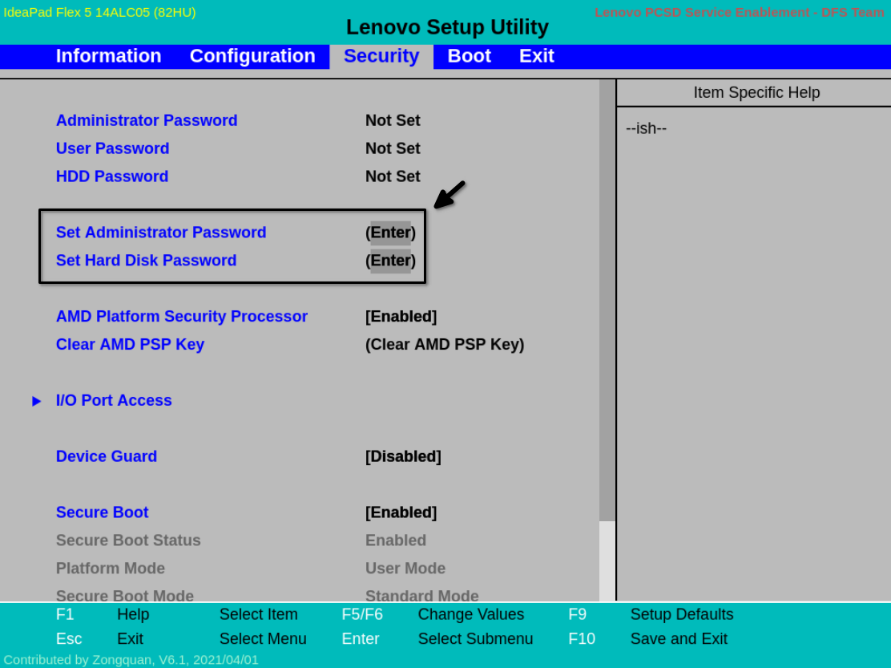
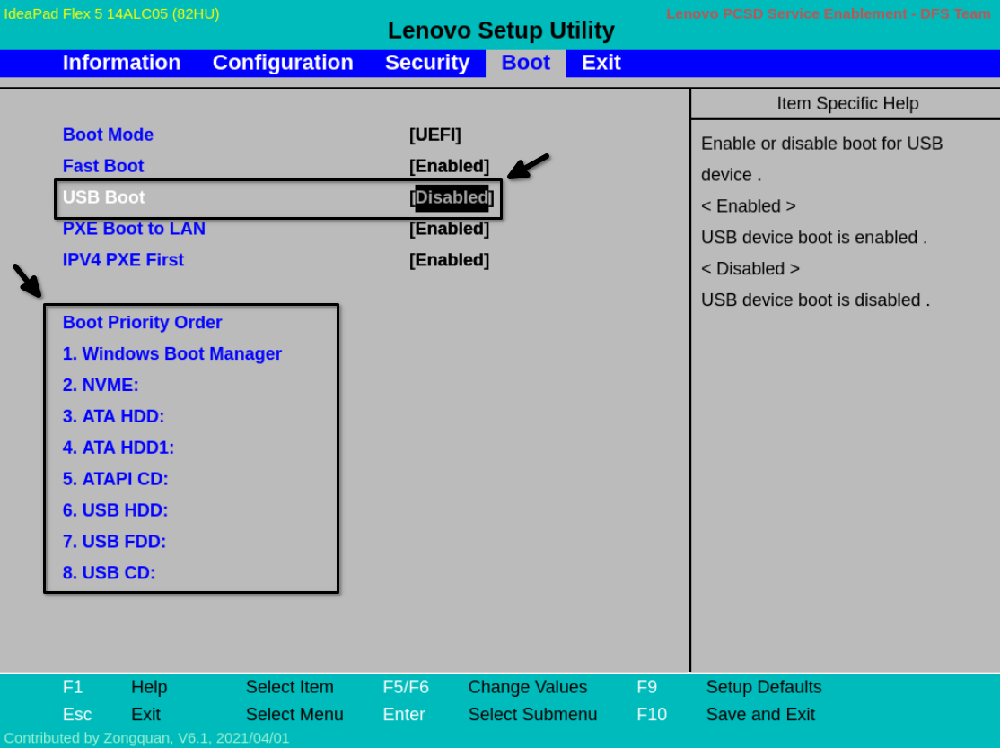
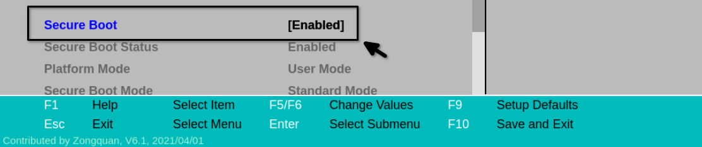
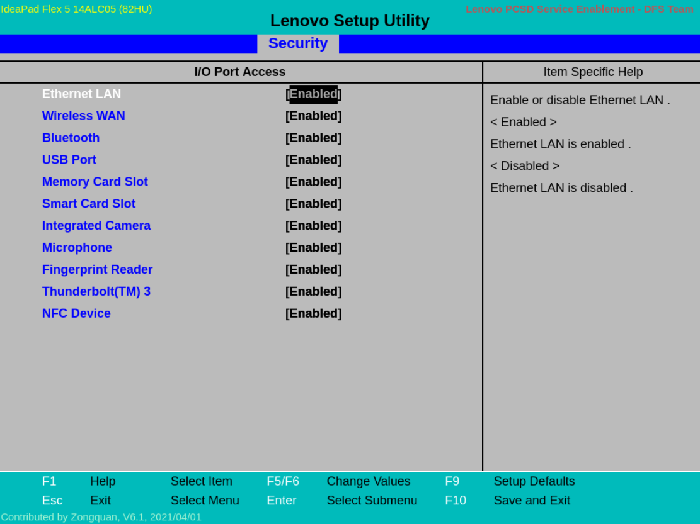

En mi caso usaré este Simulador de Lenovo con todos los modelos de sus portátiles. Yo escogeré la del Lenovo Flex 5 ya que es un portátil el cuál he usado bastante.
Esta configuración es necesaria si queremos asegurar algo más nuestro dispositivo para evitar la posible manipulación del mismo.
Aquí una pequeña lista de los parámetros más comunes a configurar:
Tendríamos que buscar el modelo de la BIOS en Internet y ver qué tecla presionar al arrancar el dispositivo. Normalmente es F2/F12/SUPR. Y también fijarnos si tenemos que presionar la tecla FN para accionar las teclas de función.
Para empezar iremos a lo más básico, lo cuál es configurar credenciales para la BIOS y para el arranque del dispositivo. Esto se hará dirigiendonos a la pestaña de Seguridad (Security), una vez ahí le daremos Intro a cada opción configurando así una contraseña para administrador y otra para el arranque.

Para el USB Boot lo dejaremos en deshabilitado para que no sea posible el arrancar desde dispositivos externos USB. Esto aumentará bastante la seguridad en nuestro dispositivo ya que nos protegeremos de posibles Live USB con Linux que puedan extraer información de nuestro disco en caso de que no esté cifrado.
En el Orden de arranque dejaremos todos los dispositivos externos como última prioridad y el que usemos de primera prioridad. Hay BIOS/UEFI que te permiten eliminar directamente una opción de arranque por lo que retiraremos todos y dejaremos la que usa nuestro S.O.

También incluiré aquí el Secure Boot que está en la pestaña de Seguridad. Esto puede ser influenciado por el S.O que estés usando.
Si usas Linux dependiendo de que distribución puede que tengas que dejar el Secure Boot deshabilitado, en caso de que sea compatible siempre priorizar el dejarlo habilitado. Y en caso de que tengas Windows lo dejas habilitado para evitar que arranque software "no confiable".

Una opción muy interesante es la de desactivar algunos de los accesos de Entrada/Salida del dispositivo. Por ejemplo desactivar funciones que no usamos y así tener menos puntos de "ataque". Esta opción se encuentra en la pestaña Security (se llama I/O Port Access) y al entrar en la opción veremos lo siguiente:
